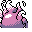

#190
Annihilape
FightingGhost
When rage outlives its body, its spirit fights on It attacks with ruthless power
Base stats Total 465
HP110
Attack115
Defense80
Speed90
Special70
Details
- Species
- Rage
- Height
- 3'11"
- Weight
- 123.5 lb
- Catch rate
- 45
- Base exp
- 220
- Growth
- Medium Fast
Level-up moves
LevelMoveType
StartKarate ChopFighting
StartLeerNormal
StartScratchNormal
Lv 14Low KickFighting
Lv 18Focus EnergyNormal
Lv 21CounterFighting
Lv 31SubmissionFighting
Lv 32ScreechNormal
Lv 36Shadow BallGhost
Lv 39ThrashNormal
Lv 44Hi Jump KickFighting
Evolution
Evolves from Primeape
Where to find
TM / HM
TM01 Mega PunchTM05 Mega KickTM06 ToxicTM07 Shadow BallTM08 Body SlamTM09 Take DownTM10 Double-EdgeTM15 Hyper BeamTM17 SubmissionTM18 CounterTM19 Seismic TossTM24 ThunderboltTM25 ThunderTM26 EarthquakeTM28 DigTM31 MimicTM32 Double TeamTM34 BideTM35 MetronomeTM39 SwiftTM44 RestTM48 Rock SlideTM50 SubstituteHM04 Strength